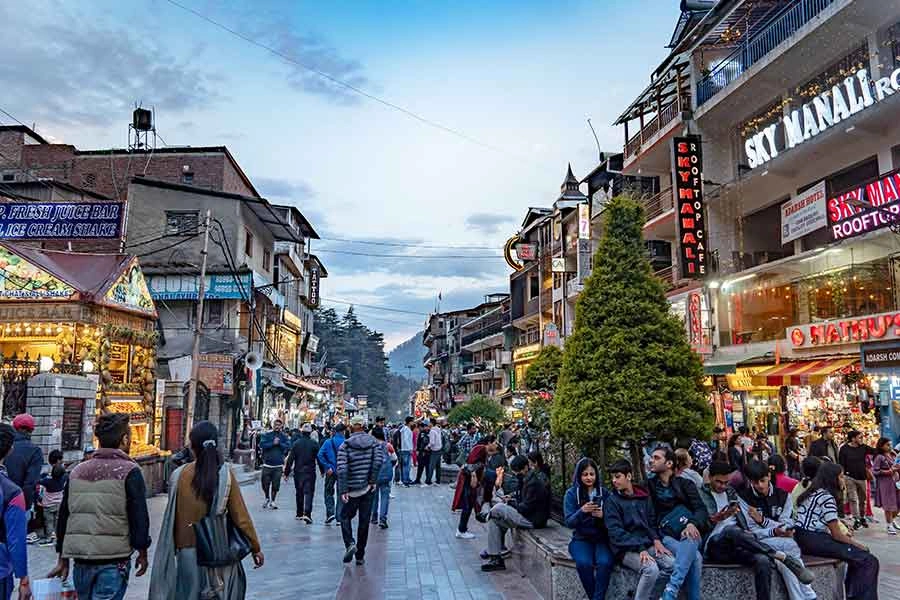
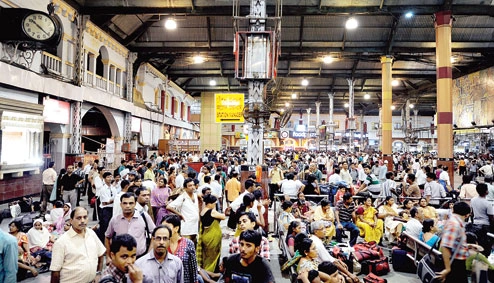
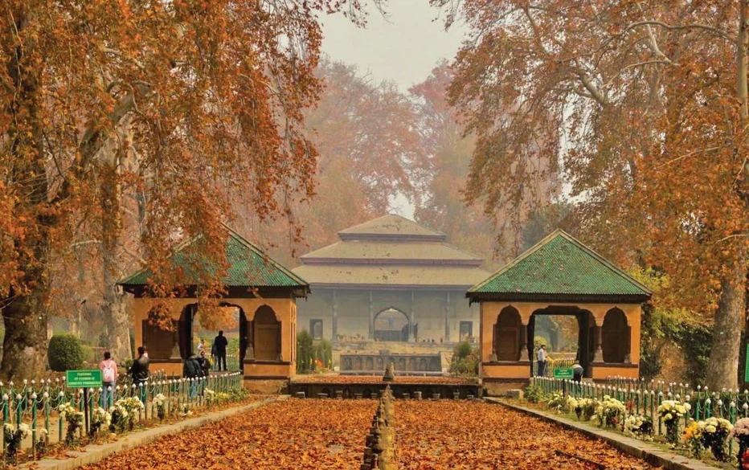
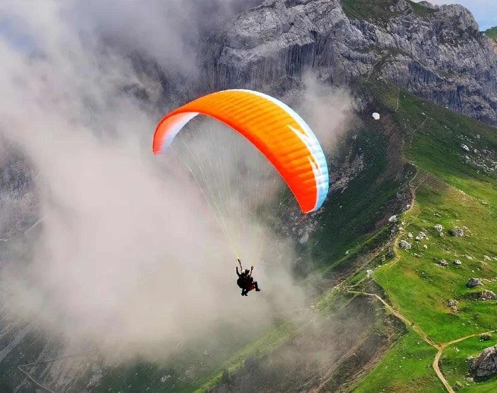
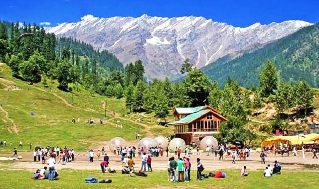
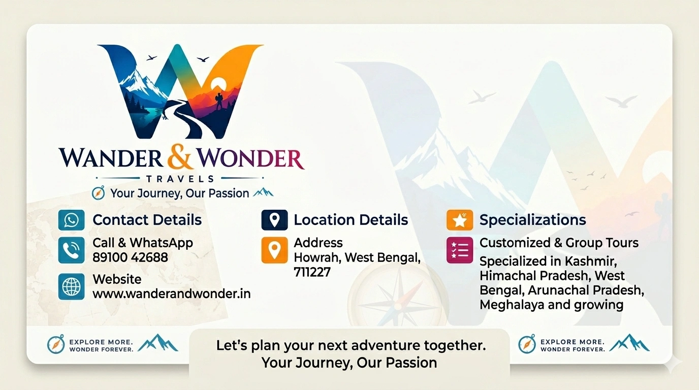

Kashmir vs Shimla-Manali During Durga Puja 2026: Which Mountain Destination Are Bengali Travelers Choosing More?
When the first sounds of dhaak begin echoing through Kolkata and the smell of shiuli flowers fills the air, another tradition quietly starts inside Bengali households — planning the annual Puja vacation.
For many families, Durga Puja is no longer only about pandal hopping. It has become the perfect opportunity to escape city life and explore mountains. And every year, two destinations dominate discussions: Kashmir and Shimla-Manali.

One promises luxury, breathtaking valleys and iconic shikara rides. The other offers budget-friendly mountain adventures, long road trips and unforgettable family memories. So for Durga Puja 2026 — which destination should you choose?
Why Durga Puja Is Bengal's Biggest Travel Season
Durga Puja often brings one of the longest holiday periods in the year. Offices remain closed, schools get vacations and families finally find time to travel together.
Because of this, October becomes one of India's busiest tourism seasons. Travel plans usually fall into categories:
- Pre-Puja departures
- Post-Puja family tours
- Premium honeymoon vacations
- Budget group departures
- College or friends trips

Among all destinations, Kashmir and Himachal Pradesh receive some of the highest Bengali tourist numbers every Puja season.
Kashmir During Durga Puja: The Premium Dream Escape

Imagine waking up beside Dal Lake on a cold October morning. Golden Chinar leaves slowly float in the air while snow-covered peaks shine under soft sunlight. That experience explains why Kashmir has become one of the fastest-growing Puja destinations among Bengali travellers.
October transforms Kashmir into a paradise filled with autumn colours. Couples, photographers and premium family travellers often choose Kashmir over other destinations.
Places Usually Covered In Kashmir Tours
- Srinagar
- Dal Lake
- Gulmarg
- Pahalgam
- Sonmarg
- Houseboat stay
- Shikara ride

Kashmir Is Best For:
- Honeymoon couples
- Luxury travellers
- Premium family tours
- Photography lovers
- Flight package travellers
Things To Consider
Flight fares become expensive during Puja season and quality hotels get booked early. Planning in advance is extremely important.
Shimla-Manali: The Favourite Budget Mountain Escape

If Kashmir represents luxury, Shimla-Manali remains the people's favourite. Thousands of Bengali families choose Himachal every year because it delivers mountain experiences at comparatively lower costs.
Train journeys, Volvo buses and flexible itineraries make travel easier for families and groups.
Why Families Prefer Shimla-Manali
- Lower package cost
- Road trip experience
- Suitable for groups
- Budget honeymoon trips
- Large hotel availability
- Train + Volvo connectivity

Popular Himachal Routes
- Shimla → Kufri → Manali
- Solang Valley
- Kullu
- Kasol
- Chandigarh → Manali Road Trip
Kashmir vs Shimla-Manali: The Real Comparison
| Factor | Kashmir | Shimla-Manali |
|---|---|---|
| Budget | Higher | Moderate |
| Luxury | Excellent | Average |
| Family Tours | Excellent | Excellent |
| Honeymoon | Best | Good |
| Connectivity | Flight Friendly | Train + Road |
| Group Tours | Moderate | Very Popular |

Which Destination Should You Choose?
Choose Kashmir if you dream of premium experiences, honeymoon trips and unforgettable scenery.
Choose Shimla-Manali if budget matters more and you prefer road journeys with family or friends.
Travel trends suggest Shimla-Manali still receives the largest number of Bengali travellers overall, while Kashmir continues growing rapidly among premium tourists.

Book Your Durga Puja 2026 Tour Early
Puja departures often sell out months in advance. Early booking means lower prices, better hotels and smoother travel experiences.
At Wander and Wonder Travels, we organise group tours and customised packages across:
- Kashmir
- Shimla
- Manali
- Meghalaya
- Arunachal Pradesh
- Dharamshala
- Darjeeling

Start planning before the Puja rush begins and turn your holiday into a memorable mountain escape.
Plan Your Tour
Website: www.wanderandwonder.in